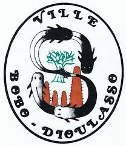

✦ Burkina Faso — Hauts-Bassins ✦Deuxième ville du Burkina Faso · Fondée au XVe siècle
Surnommée la « Cité de l'Harmonie », Bobo-Dioulasso est un joyau culturel de l'Afrique de l'Ouest — une ville vivante où les traditions séculaires se mêlent à une hospitalité légendaire, au son du balafon et du djembé.
À propos de la ville
Bobo-Dioulasso, capitale économique du Burkina Faso et chef-lieu de la région des Hauts-Bassins, est une métropole qui a su préserver son âme traditionnelle tout en s'ouvrant au monde. Son nom, qui signifie « chez les Bobo qui parlent Dioula », témoigne de la richesse de son tissu culturel multiethnique.
La vieille ville abrite la Grande Mosquée de Dioulassoba, joyau d'architecture soudano-sahélienne, ainsi que les quartiers historiques de Kibidwé et Tounouma. Le marché central anime quotidiennement ce carrefour entre artisanat, gastronomie et vie sociale.
Le fleuve Kou, les forêts sacrées de Koro et les cascades de Karfiguéla offrent un écrin naturel exceptionnel aux portes de la ville.
Explorer le patrimoine →« Bobo-Dioulasso, c'est une ville où l'on arrive étranger et l'on repart avec l'âme réchauffée. »
— Voyageur anonyme